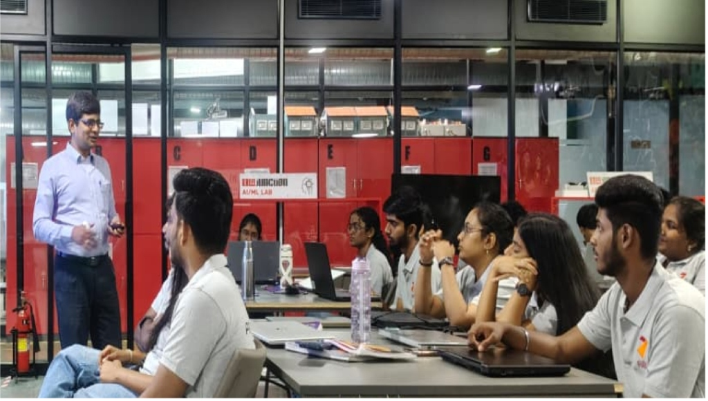
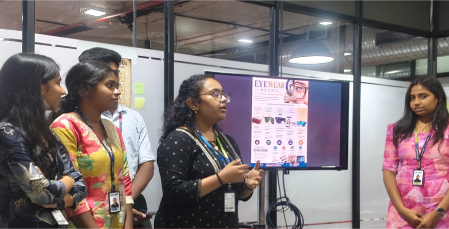

Design & Applied Problem Solving
- Design Thinking (Meera): Mapped consumer friction points to build empathy-first solution models.
- IDEO Framework: Explored iterative cycles of Inspiration, Ideation, and Implementation.
- Eyewear Retail Activity: Analyzed consumer buying behavior and omnichannel retail touchpoints.
Tech, Data & Strategic Frameworks
- Recommendation Algorithms: Studied collaborative and content-based filtering models driving customer discovery.
- Power BI Dashboards: Built interactive dashboards to translate raw metrics into business KPIs.
- Strategic Analysis: Executed end-to-end Value Chain and SWOT analyses on operational workflows.
- Prospect Theory: Evaluated cognitive framing and loss aversion in consumer pricing models.
- Base64 Encoding & Portfolio: Explored data serialization basics and set up project documentation structures.

Week Highlight
Cross-Sector Masterclass: Agriculture, Textiles & Retail
"Real operational moats are built on the ground—managing crop yield cycles, textile lead times, and retail shelf-velocity."
Guest Speaker Session
Leadership & Drive
Practical strategies for workplace discipline and momentum led by Ram.
Week 1 Synthesis
Delivered our first end-of-week strategy presentation summarizing core findings.

Looking Ahead
Week 1 built our foundation in quantitative analysis and customer empathy. Ready to take these analytical tools into Week 2's prototyping challenges.